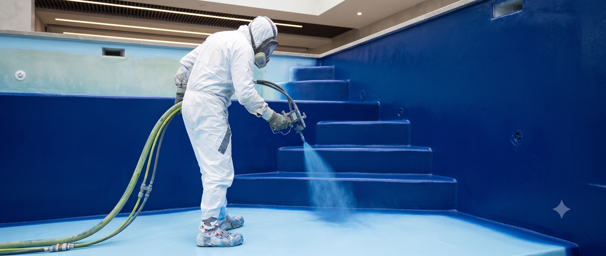
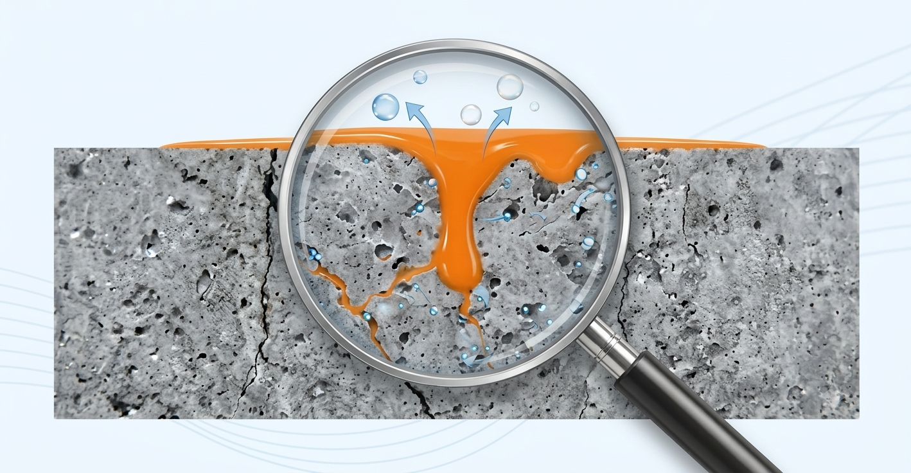
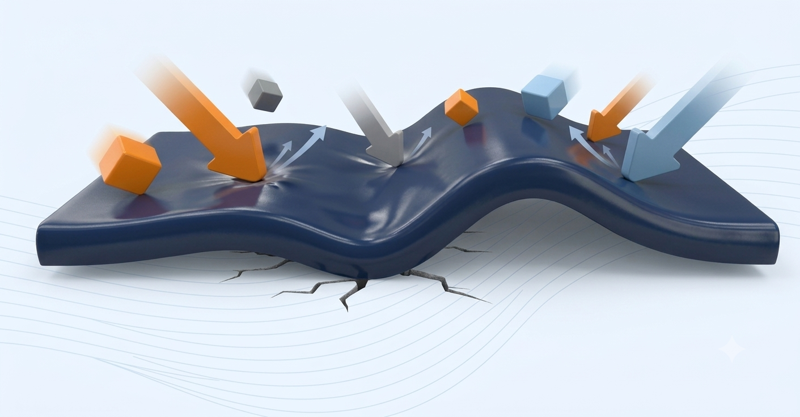
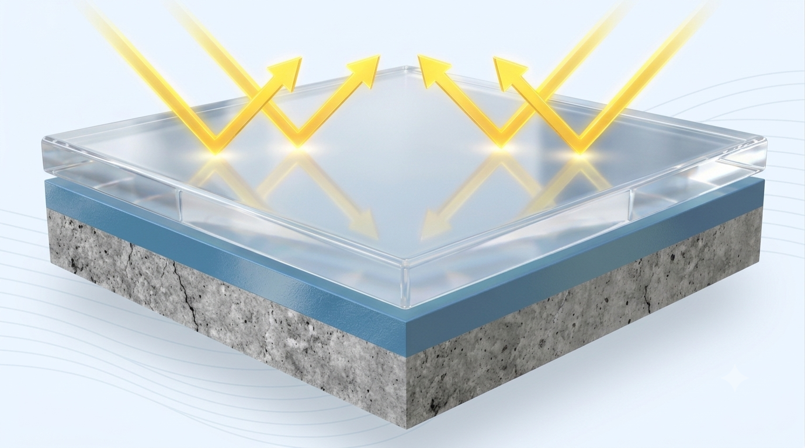
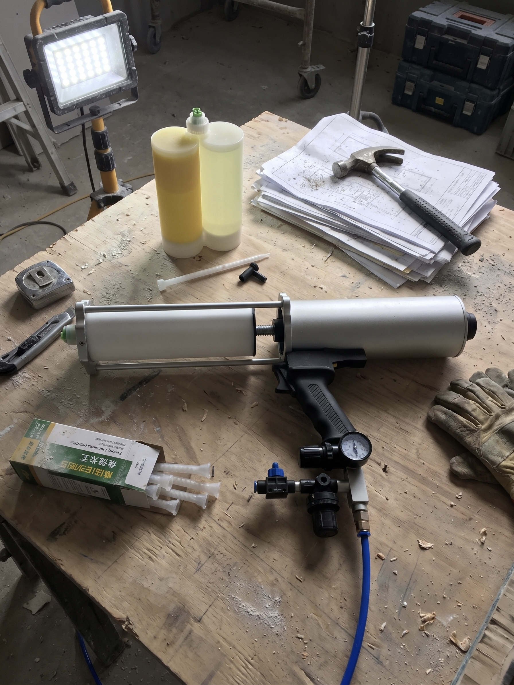
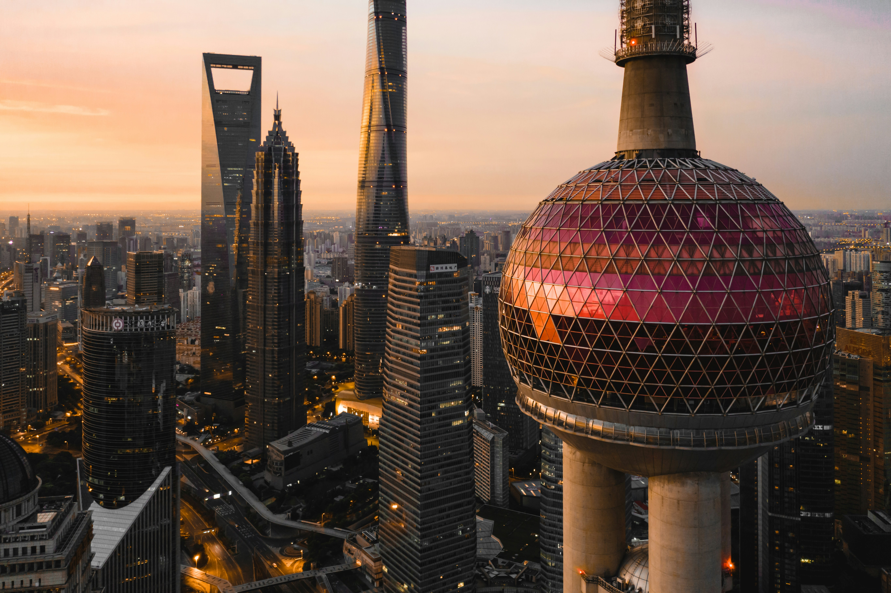
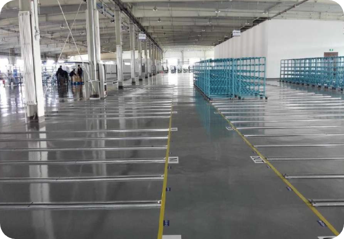

극한의 환경을 견디는
완벽한 폴리머 솔루션
선박과 산업 인프라를 부식과 마모로부터
완벽하게 보호하는 코팅 시스템,
SWD가 고분자 도료 시대를 열어갑니다.
가혹한
환경에서
입증된 기술력.
SWD KOREA는 미국의 선진화된 화학
공학 기술을 바탕으로 부식 방지, 방수, 내마모성이 뛰어난 프리미엄 폴리우레아 및 폴리아스파틱 코팅 솔루션을 제공합니다.
선박 수리 현장부터 대형 해양 플랜트, 정밀 산업 설비, 그리고 콘크리트 구조물까지 당신의 가장 중요한 자산을 안전하고
영구적으로 보호합니다.

Core Solutions
해양 및 산업 환경을 위한 3단계 프리미엄 코팅 시스템

PRIMER 프라이머
모재와의 완벽한 접착을 위한 기초 표면 설계

POLYUREA 폴리우레아
극한 환경을 견디는 초고강도 핵심 보호층

SWD900
스프레이 순수 폴리우레아 엘라스토머
100% 고형분의 방향족 순수 폴리우레아로, 수직면이나 굴곡면에서도 처짐 없이 빠르게 경화되어 강력한 방식 및 내마모 보호층을 형성합니다.
SWD951
극한 환경 적응형 폴리우레아 엘라스토머
시공 시 주변의 습도와 온도 변화에 탁월한 둔감성을 지녀, 까다로운 기후 조건에서도 안정적이고 완벽한 방수·방식 성능을 발휘합니다.
SWD562
콜드 스프레이 폴리우레아 엘라스토머
고가의 대형 장비 없이 간단한 휴대용 스프레이 건으로 1인 시공이 가능하여, 다양한 소면적 및 유지보수 환경에 최적화되었습니다.
TOPCOAT 탑코트
자외선 및 외부 환경 요인으로부터의 완벽한 마감


대형 장비의 제약을 없앤
콜드 스프레이 혁신.
SWD562는 고가의 전용 대형 장비 없이 간단한 휴대용 스프레이 건만으로 완벽한 코팅을 구현하는 100% 고형분 폴리우레아 엘라스토머입니다.
복잡한 공정 없이 1인 시공이 가능하여 비용을 획기적으로 절감할 수 있습니다. 어떠한 굴곡이나 수직면에서도 처짐 없이 치밀하고 이음매 없는 보호층을 형성하며, 기존 스프레이 공법의 한계를 뛰어넘어 다용도 소면적 프로젝트 및 현장 유지보수에 최적화된 새로운 솔루션을 제공합니다.
자세히 알아보기Application Cases
현장 적용 사례
미국 샌프란시스코 금문교
샌프란시스코의 랜드마크이자 '세계에서 가장 아름다운 다리'로 꼽히는 골든게이트 브릿지(금문교)에 있어 다리의 상징인 붉은 오렌지색 코팅은 안개가 잦은 해당 지역 특성상 항해하는 선박의 시인성을 확보하기 위한 필수 요소입니다. 태평양에서 불어오는 강한 염수와 염분 농도가 높은 안개에 직접 노출되어, 샌프란시스코 베이 지역의 그 어느 다리보다도 심각한 염해를 겪고 있었습니다. SWD 제품은 이처럼 열악한 환경 속에서도 뛰어난 내후성, 강력한 구조물 보호 능력, 그리고 장기적인 내구성을 입증하며 교량 관리에 가장 적합한 코팅제로 최종 선정되었습니다.

중국 상해 동방명주 타워
상하이의 스카이라인을 상징하는 동방명주 타워는 고도 468m의 초고층 건축물로, 돔과 곡면 등 매우 복잡한 3D 구조를 띄고 있어 전통적인 방수 방식으로는 완벽한 밀봉이 불가능했습니다. 또한 초고층 특성상 상시적으로 엄청난 강풍과 풍압에 노출되어 기존 코팅막들이 쉽게 들뜨고 찢어지는 심각한 유지보수 문제를 안고 있었습니다. SWD 폴리우레아 시스템은 수직면이나 곡면에서도 흘러내림 없이 즉각 굳어버리는 초속 경화 기술과 강력한 접착력을 바탕으로, 까다로운 굴곡진 접합부까지 이음새 없이 완벽하게 감싸 안았습니다. 이를 통해 초고층 빌딩의 극한 기후를 이겨내고 구조적 누수 취약점을 원천 차단하는 성공적인 랜드마크 보호 솔루션으로 자리 잡았습니다.

대형 플랜트 및 물류 창고 바닥
플랜트 및 물류 창고의 바닥은 중장비와 지게차의 끊임없는 이동으로 인해 파임, 긁힘, 분진 발생이 빈번하게 일어나는 가혹한 환경입니다. 일반 바닥재는 잦은 보수 공사로 시설 가동 중단을 초래하지만, SWD 시스템은 초고강도 내마모성을 발휘하여 평탄하고 안전한 물류 동선을 장기간 보장합니다. 자외선, 온도 변화 등 환경적 스트레스에 의한 열화를 원천 차단하여 재시공 주기를 획기적으로 연장하며, 공간 운영의 연속성과 경제성을 극대화하여 시설의 자산 가치를 완벽하게 보존합니다.
Contact & Locations
제품 문의 및 기술 지원
SWD KOREA
M&C Hi-Tech Co., Ltd.
부산광역시 영도구 산업로 23 일신빌딩, 49008